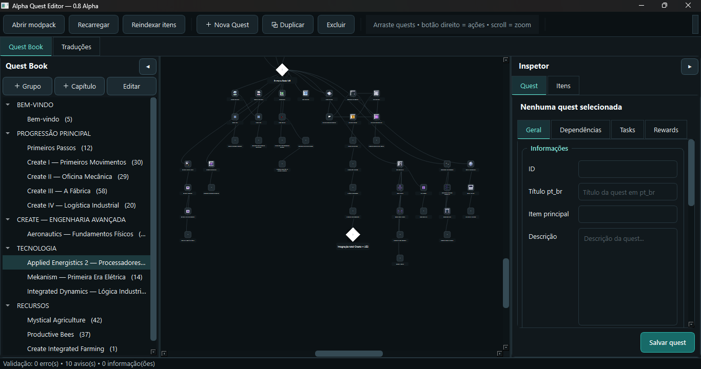

Edite sem abrir o Minecraft
Abra, organize e altere capítulos, quests, tarefas, recompensas e dependências em uma interface visual.
01Crie, organize e edite quests do FTB Quests em uma interface visual — sem abrir o Minecraft, sem lutar com arquivos e sem perder horas.
✓ Gratuito e open source • Minecraft Java • FTB Quests 2101.x

Concentre-se na experiência do jogador. O editor cuida da parte cansativa para você construir uma progressão coerente, organizada e divertida.
Abra, organize e altere capítulos, quests, tarefas, recompensas e dependências em uma interface visual.
01Encontre itens dos mods instalados, visualize IDs e use-os nas quests sem alternar entre várias ferramentas.
02Trabalhe diretamente com a estrutura do projeto e mantenha os arquivos SNBT organizados e prontos para o jogo.
03Navegue pelas conexões entre quests e edite traduções com muito mais clareza e segurança.
04Selecione a pasta do projeto. O editor identifica capítulos, traduções e os itens disponíveis.
Crie quests, mova os nós, conecte dependências e configure tarefas e recompensas visualmente.
Exporte as alterações para o FTB Quests e entre no jogo apenas quando estiver pronto para testar.
Editar dezenas de quests dentro do jogo é lento. Alterar SNBT manualmente é arriscado. O Alpha Quest Editor une a liberdade dos arquivos com a clareza de uma interface feita para criação.
{
id: "5A3F8C01D2"
title: "Liga de Andesito"
tasks: [{
type: "item"
item: "create:andesite_alloy"
count: 1
}]
}Baixe o editor, abra seu modpack e transforme sua ideia em uma progressão que os jogadores vão querer completar.
Windows 10/11 • Versão Alpha • Projeto independente